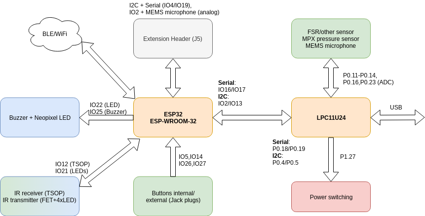

This block diagram shows the current (more exactly: future) assignment of hardware and peripherals to the ESP32 and the companion USB chip (LPC11U24).

FlipMouse v3 blockdiagram
Remarks
- Power switching: due to USB limitations, we are allowed to have a maximum supply current of 2.5mA in suspend mode. This is limiting our possibilities with the ESP32. The solution is a double 3V3 power domain. We have one LDO for the LPC chip and a TSR-1 SMPS converter for the ESP32 (and all other parts of the circuit). In case of USB suspend, all parts except the LPC chip are switched off. The supply voltages on the extension/sensor board headers are switched off as well.
- The ADC which is built in the ESP32 is not really good. From 3.1b onward, we use the ADC in the LPC, and transfer the ADC readings via I2C
- Communication between LPC<->ESP32 is done via 2 different interfaces: UART (115200, 8N1) and I2C (100kHz, ESP32 is master). The UART interface is dedicated to all USB-CDC communication, the LPC chip acts as a transparent bridge to the host PC. I2C transfers all other data: ADC readings from LPC to ESP32, HID related commands from ESP32 to LPC and any future implemented controlling commands